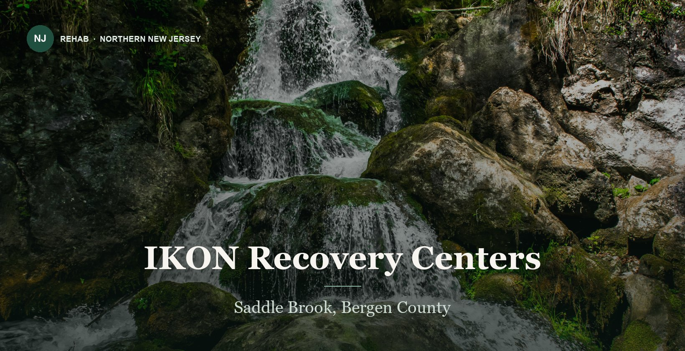

Ranked 03 of 6
IKON Recovery Centers
Saddle Brook, NJ · Bergen County
A broad outpatient offering with several named specialty tracks and a published state license number, but detox is arranged through partners rather than delivered on site.


At a glance
- Levels of care
- Partial care, IOP, outpatient, MAT, telehealth
- Licensing
- License 2000964, published with an expiration date
- Accreditation
- The Joint Commission; LegitScript; NAADAC; NALGAP
- Notable
- Executive, Heroes and Pride tracks; no in-house detox or sober living
Strong on published credentials, weakest on continuity. The site states plainly that detox and sober living are not provided in house, which means a handoff at the two points where handoffs fail most often. Ask exactly which partner handles withdrawal management and who holds clinical responsibility during it.
*Provider-reported information, current as of August 2026; confirm before admission. Inclusion does not imply endorsement. Details can change.
A claim that does not check out
IKON Recovery Centers publishes this on its own website:
Licensed by the State Department of Healthcare Services, License 2000964. Expiration 11/30/2026
Publishes "Licensed by the State Department of Healthcare Services, License 2000964. Expiration 11/30/2026." The Department of Health Care Services is California's agency. New Jersey licenses addiction treatment through DMHAS and the Department of Health and has no department of that name, so this claim does not verify for a Saddle Brook, NJ facility. NAADAC and NALGAP are membership associations, not accreditors, and are displayed as badges alongside accreditation seals.
What this does and does not mean
We could not establish that IKON Recovery Centers is unlicensed, and nothing here should be read that way. A facility can hold a perfectly valid New Jersey license and still publish a wrong sentence about it — treatment websites are routinely built from recycled templates, and a licensing line copied from an out-of-state original is the most likely explanation.
What we can say is narrower and still matters: the sentence gives a reader nothing they can check. A licensing claim exists so that a family can verify it at 11pm before making a phone call. One that names a regulator in the wrong state cannot be verified by anyone, which is why our algorithm scores it at zero rather than at face value.
What to do about it
- Ask IKON Recovery Centers directly for its New Jersey DMHAS license number and the name on the license.
- Check that number against the New Jersey Substance Abuse Monitoring System treatment directory.
- Ask which entity holds the license, and whether it is the same entity operating the Saddle Brook, NJ address.
Quoted from the center’s own website in August 2026. New Jersey licenses substance use disorder treatment through the Division of Mental Health and Addiction Services in the Department of Human Services, and through the Department of Health; it has no Department of Health Care Services. If this has since been corrected, we will update it — the claim, not the center, is what is being assessed.
How it scores
Four dimensions, weighted equally. These measure the clarity and breadth of publicly available information—not treatment outcomes or patient satisfaction. How we review →
Clinical clarity
4.0Specialty tracks are named and the license number is published with an expiration date, which is more transparency than most of this group offers.
Medical support
3.0Medication-assisted treatment and Vivitrol are offered, but the site states detox is not provided in house and is arranged through partners.
Program depth
4.0Partial care through outpatient, plus Executive, Heroes and Pride tracks and trauma-informed care.
Continuing care
3.3Extended aftercare is emphasized, but the absence of in-house sober living removes a common step in the transition home.
Who it fits
- People who want a specialty track — executive, first responder or LGBTQ-focused
- Anyone who wants to verify a license number before calling
- People already stabilized who do not need withdrawal management
Who it does not
- Anyone likely to need detox, which happens at a partner facility rather than here
- People who want sober living attached to the program
- Anyone who wants one provider responsible from withdrawal through aftercare
Paying for it
- Commercial insurance
- Insurance accepted; carrier list not published
- Medicaid / Medicare
- Not published
- Self-pay
- Rate not published
Because detox happens at a partner facility, ask whether that partner is in network too. A covered outpatient program paired with an out-of-network detox is a common and expensive surprise.
Cost and coverage compared with Valley Spring Recovery Center →
What to ask them
Specific questions for this center, based on what its own materials leave open.
- Which facility handles detox, and who is clinically responsible during the transfer?
- Is license 2000964 current, and has it been renewed past its stated expiration?
- What does the Heroes track include that the standard program does not?
- Where do clients go for sober living, and is that arrangement formal?
Compare with the others
- 01Valley Spring Recovery CenterNorwood, NJ3.2
- 02BlueCrest Recovery CenterWoodland Park, NJ1.6
- 04ChoicePointFair Lawn, NJ1.0
- 05North Jersey Recovery CenterFair Lawn, NJ0.8
- 06Boca Recovery Center — EnglewoodEnglewood, NJ0.5
Alternatives to IKON Recovery Centers · Is IKON Recovery Centers worth it? · All six side by side